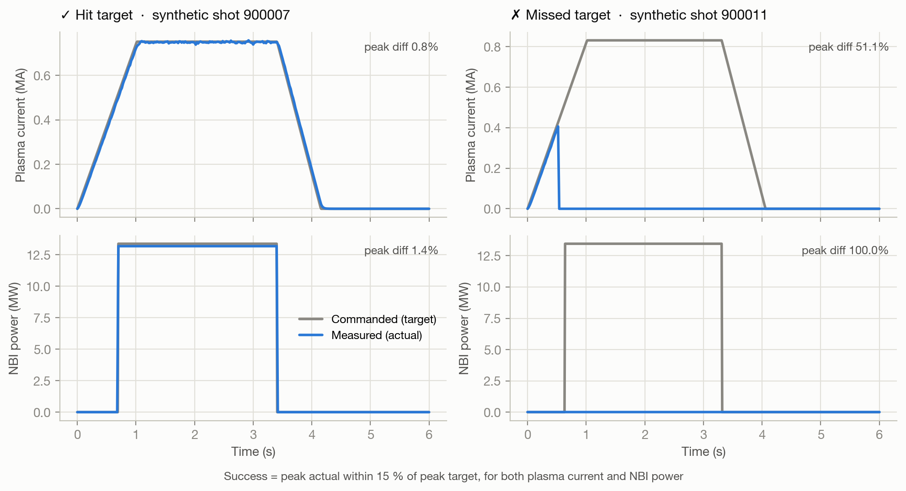
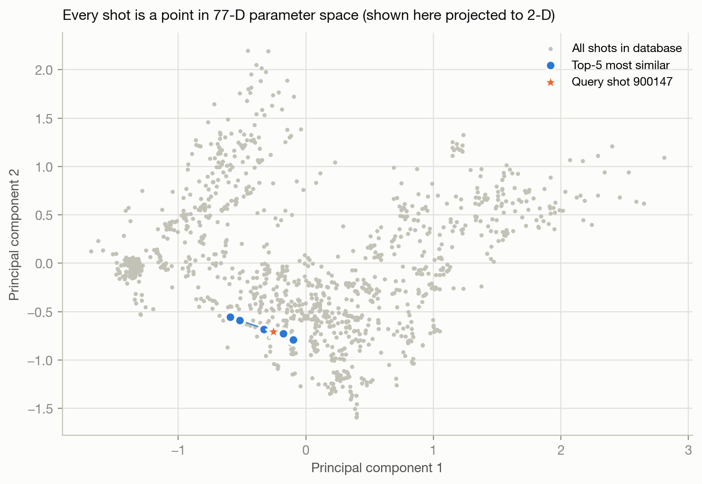
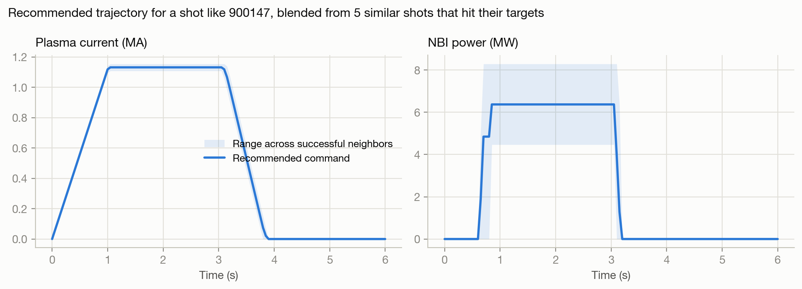
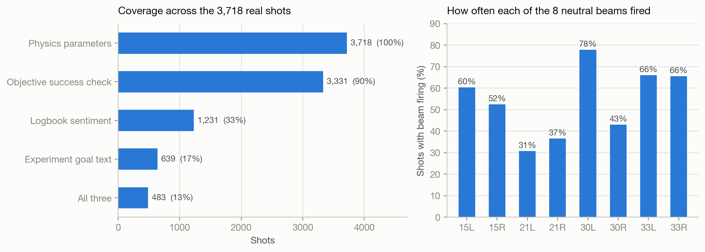

A search engine for fusion experiments. A physicist describes how the DIII-D tokamak will be set up today; the system finds the five most similar past shots, tells them which ones actually worked, and recommends what to command.
DIII-D is the largest magnetic-fusion tokamak operating in the U.S. Each experiment (a shot) is a few-second plasma discharge, and the machine has run hundreds of thousands of them. Before a run day, physicists want to know: has anyone run a plasma like this before, and did it work?
The answer is buried in raw diagnostic time series (one HDF5 file per shot, hundreds of signals each) and in free-text operator logbooks. There was no way to query “shots like this one.”
I was handed the raw data and built everything else: the parametrization, the success metric, the logbook analysis, and the search.
Each stage reads only what earlier stages produced, so every CSV/JSON is a checkpoint and any stage can be rerun alone. Ran on Princeton's Stellar HPC cluster.
Reduces each diagnostic to a robust peak (95th pct) and mean over the plasma window.
Splits heating power across all 8 neutral beams; guards against corrupt arrays.
Pulls commanded and measured waveforms for plasma current and beam power, validated on reference shots.
Parses operator notes and attributes them to the individual shot, with labeled session fallback.
Objective: did the machine deliver what operators commanded, within 15 %?
One record per shot: experiment goal, sentiment, objective success, with honest coverage flags.
Cosine similarity over 77 normalized parameters; query by shot number or by planned settings.
Blends the commanded waveforms of the similar shots that succeeded into one suggested program.
The real archive is restricted, so this runs the same algorithms in your browser on a synthetic database of ~1,150 shots generated with the same schema, so nothing here is real DIII-D data. Set up a shot and watch the recommendations update.
Plasma cross-section from your elongation and triangularity. Unspecified parameters (ECH, gas) default to the database mean, exactly as in the original notebook.
Tip: click any result row to search from that shot instead. The nearest neighbors are usually other shots from the same session, the same sanity check that passed on the real data.
| Shot | Similarity | Hit target? | Logbook |
|---|
Four ideas carry the system. Figures below are from the synthetic database; the real-data numbers are in the next section.
Raw diagnostics are time series of different lengths, sample rates and units, often with spikes and dropouts. I reduced each to a 95th-percentile “peak” (robust to single-sample spikes, unlike max) and a mean over the 0–6 s plasma window.
The result is a fixed 77-number fingerprint: electron temperature and density, plasma current, plasma shape (elongation κ, triangularity δ, βN, q95), absorbed power from each of the 8 neutral beams, power from each of the 12 ECH gyrotrons, and flow from each of the 11 gas valves.
Logbooks are subjective and sparse, so I built an objective check: interpolate the measured signal onto the commanded timestamps and require peak actual within 15 % of peak target, for plasma current and total beam power independently.
Before trusting the target signals, I validated them on reference shots. Beam power matched to 1–2 %, which is consistent with known beam shine-through losses.

Each session's electronic logbook tags entries as Shot <number> <ROLE>:. I parsed these so sentiment attaches to the specific shot the note is about. Shots without their own note inherit the session summary, explicitly labeled as lower-quality signal.
Keyword lists were tuned for plasma vocabulary: “mode” and “clean” were removed because they false-matched “H-mode” and “wall cleaning.”
Features are min-max normalized and compared with cosine similarity. Query by an existing shot number, or by planned settings (unspecified ones default to the database mean). Results come back enriched with success and sentiment.
The recommended trajectory blends the commanded waveforms of the neighbors that hit their targets, weighted by similarity, and shows their spread as a confidence band.


Aggregate numbers from the full run on DIII-D data (no per-shot data is published here).

3,718 of 4,014 shot files parametrized; the 292 failures were corrupt or truncated HDF5 files, all logged. 3,331 shots got an objective success score: 2,426 hit target, 905 missed.
Sanity check passed: the nearest neighbor of real shot 144229 was 144230, the very next shot of the same session, followed by a cluster of shots from a related session (similarity 0.93–0.96).
Only 483 shots (13 %) have goal text, sentiment, and a success score. I traced this to a scope mismatch: the logbooks span 2012–2026, while the HDF5 extraction covers a narrower slice. It is a data-coverage gap, not a pipeline bug, and it is the first thing to fix with a wider archive.
The parts I'd want to talk through in an interview.